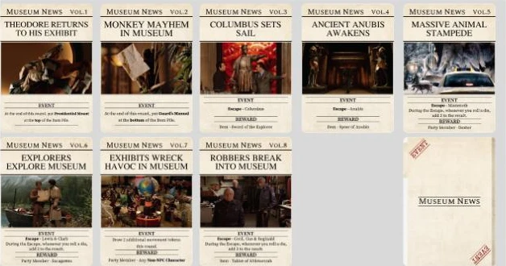
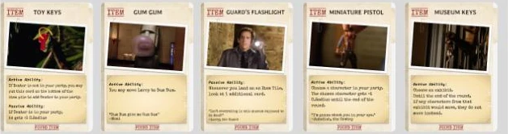

01 · The board
The museum, as a grid.
The board is the museum floor laid out as a grid, with the film’s exhibits as colour-coded zones: the Hall of African Mammals, the Hall of Miniatures, the Egyptian Temple of Ahkmenrah, the Hall of American History and the corridors between them.
Characters don’t move freely. Movement tokens fix the direction (right only, up only, diagonal, and so on), so getting across the museum takes planning. The legend on the side explains every token, the exhibit colours, the player start and where the robbers spawn.
02 · A turn
Seven phases, printed on the board.
The turn flow sits on the board itself, so nobody has to dig through a rulebook mid-game:
- Draw character movement tokens
- Placement
- Random movement
- Capture or befriend
- Guard phase (the player moves)
- Capture or befriend
- Event: read the objective, place party characters, roll for the event character’s movement, then complete the event
03 · Events
Every event is a front page.
The eight events are styled as issues of Museum News, each with a headline from the film: Theodore returns to his exhibit, Columbus sets sail, Ancient Anubis awakens, a massive animal stampede, robbers break into the museum. Each card states the event and its reward, either an item or a new party member.

04 · Items
Items with abilities and a quote.
Found items, like the Toy Keys, Gum Gum, Guard’s Flashlight and Museum Keys, give active or passive abilities, from moving Larry to Dum Dum to looking at an extra card. Each one carries a line from the film. Starting and event items, such as the Tablet of Ahkmenrah and the Spear of Anubis, tie back to the events.

05 · The full kit
Built to be played, not just shown.
Beyond the board and cards, the file has a sheet of 40 movement tokens, a DLC expansion, A4 printables so the game could be cut out and playtested, and the Green Light pitch we used to get the concept approved.